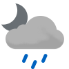

Weather
Germersheim 15.6-21.4
15.6-21.4

15.6-27.8 Fri

16.0-25.5 Sat

14.6-19.1 Sun

12.3-20.5 Mon

11.2-22.4 Tue

12.4-24.7 Wed

12.6-25.3 Thu

14.4-26.7 Fri

17.0-18.9 Sat
Erlabrunn 13.2-17.6
13.2-17.6

13.4-20.6 Fri

14.5-22.1 Sat

11.5-15.0 Sun

9.2-13.9 Mon

8.0-17.3 Tue

12.8-20.3 Wed

14.4-20.7 Thu

16.1-22.4 Fri

13.7-16.6 Sat
Schmilka 14.9-21.2
14.9-21.2

14.9-23.5 Fri

16.0-23.2 Sat

14.4-18.2 Sun

11.0-16.7 Mon

10.9-19.8 Tue

13.7-21.7 Wed

14.1-23.5 Thu

17.4-24.9 Fri

16.7-17.0 Sat